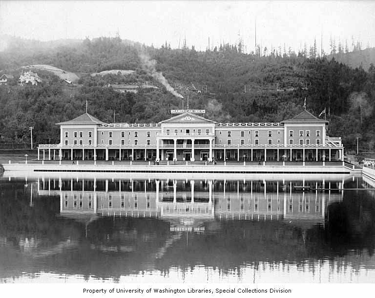
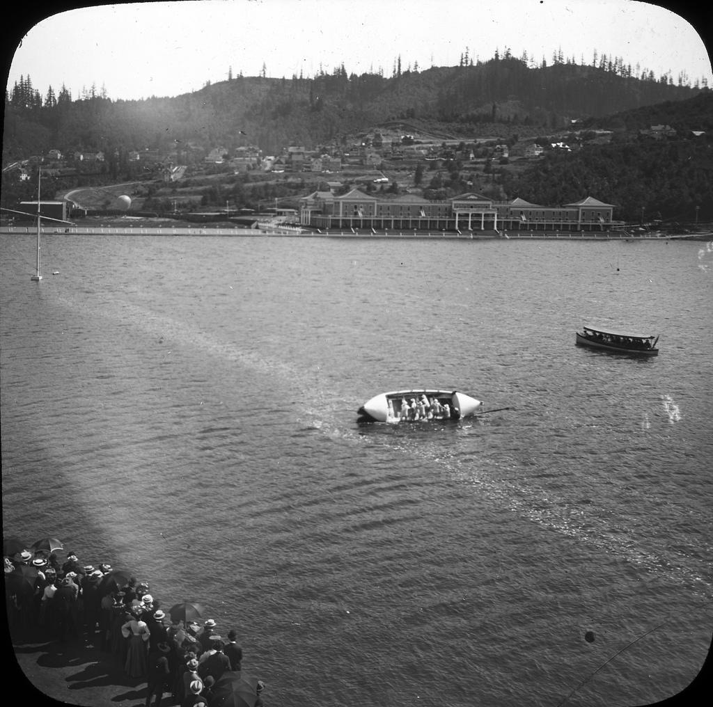

American Inn
Location in 1905: 45.53916569, -122.71630615
Current Location: 45.5315152, -122.69531786
A large hotel on the grounds of the exposition.
It's said that the main section of the building was moved to Northrup,
and is now the American Inn Condominiums.

